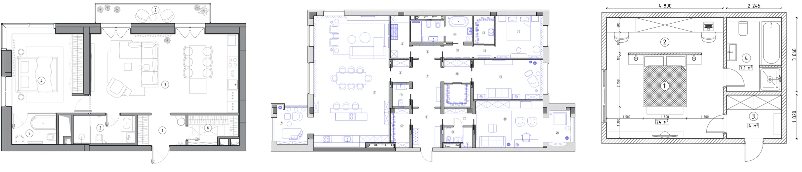
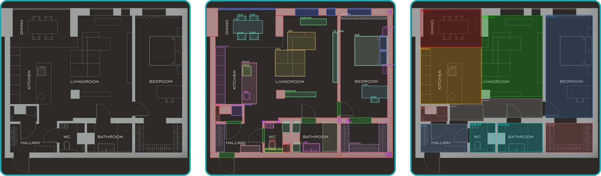
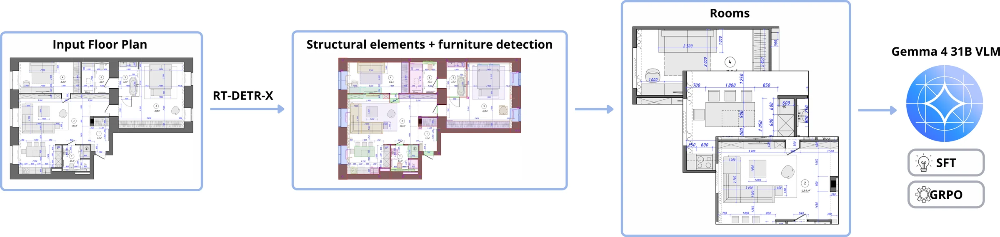
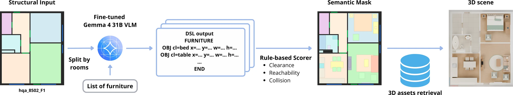

A fine-tuned vision-language model writes furniture layouts for real floor plans as short, editable code. It learns professional furnishing patterns from AntPlan, a collection of 505 real architectural drawings, and is then refined with reinforcement learning against a room-aware Layout Rule Score. It generates layouts directly, without an iterative agentic critique loop at inference.
Same room, eight methods
Six SceneSmith room shells for each of four room types, rebuilt in 3D from the benchmark layouts with the paper's assets. Every method furnishes the same walls, doors and windows. Pick a room from a room-type menu and any two methods, then orbit and look from any angle. The two cameras stay linked.
WebGL 2 is not available in this browser, so static renders are shown instead of interactive scenes.
This room, per method
What Architect-Ant wrote for this room
Three sources of layout knowledge, combined in training
Good furniture placement draws on examples, explicit constraints and broad world knowledge. Each source is incomplete on its own. Architect-Ant combines all three while it is trained, so that at inference a single model generates constraint-aware layouts directly.
Professional layouts
AntPlan provides supervision from real architectural drawings: object choices and arrangements that professionals actually use, including fixtures and service elements.
Explicit constraints
The Layout Rule Score turns geometric and functional requirements into a deterministic reward, including containment, collisions, clearance, reachability and room-specific relations.
Pretrained knowledge
Gemma-4-31B contributes broad semantic and visual understanding. A LoRA adapter per room type adapts it to floor plans and the layout language.
2.1AntPlan: real professional floor plans
AntPlan contains 505 residential floor-plan drawings with structural, room and furniture annotations across ten room categories and 92 object classes, with 53 objects per plan on average. Walls, doors, windows and railings are extracted with an RT-DETR-X detector trained on CubiCasa5K, and room labels are assigned manually. A furniture detector bootstrapped from a hand-labeled subset proposes objects, which are then reviewed and corrected by hand. The experiments use cleaned bedroom, bathroom, kitchen and living-room subsets with 2,259 training and 243 validation rooms. Rooms from one source plan never appear in both splits. The dataset card is on Hugging Face.


| Dataset | # plans | Style | Room cls. | Furniture cls. | Avg. objects |
|---|---|---|---|---|---|
| MSD | 5,372 | Synthetic, simple boxes | 9 | — | — |
| ResPlan | 17,000 | Synthetic, simple boxes | 7 | — | — |
| ZInD | 2,737 | Synthetic, from 3D reconstruction | free text | — | — |
| FloorPlanCAD | 2,845 | CAD drawings, tiled | — | 30 | 16.73 |
| SESYD | 10 | Synthetic | — | 12 | 17.07 |
| CubiCasa5K | 5,000 | Real, professional architectural | 10 | 10 | 27.20 |
| AntPlan | 505 | Real, professional architectural | 10 | 92 | 53.01 |
FloorPlanCAD is distributed as 15,663 tiles cut from 2,845 drawings; SESYD has 10 layouts with 100 variations each; CubiCasa5K furniture classes are coarse.
2.2Layouts as editable code
A layout is a short sequence of objects, each with a class, the top-left corner of its footprint and its extents, in metres in the room's own frame. The format is compact enough to generate directly and simple to edit by hand. It lets containment, overlap and clearance be checked exactly.
Height and orientation are not predicted. When the layout becomes a 3D scene, each footprint is matched to an asset of a compatible class and size. Its height comes from the asset, and its orientation is inferred from walls and neighbouring furniture: chairs face tables, televisions face seating.
FURNITURE OBJ class=bed x=0.30 y=0.50 w=1.60 h=2.00 OBJ class=nightstand x=1.90 y=0.50 w=0.50 h=0.50 END
Syntax example. The real output for each room above is shown under the viewer.
2.3Supervised adaptation, then GRPO
Gemma-4-31B-it is fine-tuned with LoRA on the language model, with the vision encoder frozen. The inputs are the room geometry as text, a structure-only raster of the room and a furniture request. The target is the final layout alone, with no reasoning traces. Reinforcement learning then starts from this checkpoint. Each rollout contains a free-form reasoning block followed by a layout, and the reward is computed only from the parsed final layout. The model therefore develops its own strategy for satisfying spatial requirements, following the outcome-supervision principle of DeepSeek-R1-Zero.

- Rollouts
- 16 responses per room, 8 rooms per update (128 on-policy rollouts), one policy-gradient step per batch
- Advantage
- reward centred by the room-group mean, scaled by the pooled batch standard deviation, clipped to [−2, 2]
- Dr. GRPO
- no per-group variance normalisation; loss normalised by a fixed 1,024-token constant
- Schedule
- 15 updates, learning rate 2×10⁻⁵, KL coefficient 0.001 to the frozen base model, no learned critic
2.4Layout Rule Score
LRS is a deterministic, room-aware score. The evaluator parses the layout and starts it at 10. It then deducts a penalty for every violated rule instance. Thirty-three rule types cover shared structural checks: containment, wall overlap and penetration, door and window obstruction, disallowed furniture overlap and accessibility. They also cover room-specific relations such as appliance mounting, kitchen runs and work zones, focal seating, window blocking, wall alignment and fixture placement.
Thresholds and exemptions are calibrated against AntPlan annotations, such as a rug beneath a bed or a sink set into a cabinet. A typical room needs 50–200 predicate evaluations. A score of 10 means no encoded rule was violated. It is not a guarantee of an ideal layout.
During GRPO, LRS is the main outcome reward, with auxiliary terms for object-size deviation, gated similarity to the annotated layout and response validity. These terms are used only in training. At inference, the same rule scorer screens and selects among candidates.
2.5Inference and 3D scene construction
For a new room shell, Architect-Ant retrieves the eight most similar same-type training rooms by size and samples four furniture requests from them, each specifying categories, counts and approximate sizes. It generates five layouts per request, 20 candidates in total, and the rule scorer selects one of them. The selected layout remains editable and is converted into a furnished 3D scene.

Fuller rooms, fewer violations
The benchmark uses 109 released SceneSmith room shells: 31 bedrooms, 32 living rooms, 27 dining rooms, 13 kitchens and 6 bathrooms. Architect-Ant, Holodeck, LayoutGPT and LayoutVLM share the same Gemma-4-31B backbone. SceneSmith contributes its released GPT-5.2 scenes, refined by its own agentic loop.
| Scene statistics | Metrics and runtime | ||||||||||
|---|---|---|---|---|---|---|---|---|---|---|---|
| Method | Base model | Scenes | Obj./room | Obj./10 m² | Cov. % | COL+ % ↓ | OOB % ↓ | Acc. pairs % ↑ | FUN+ % ↑ | LRS ↑ | Time s ↓ |
| ATISS | Transformer | 90 | 6.5 | 3.10 | 29.5 | 24.1 | 18.1 | 95.2 | 84 | 1.50 | 20.2 |
| InstructScene | Graph diff. | 90 | 7.2 | 3.15 | 26.3 | 13.7 | 20.9 | 86.9 | 63 | −2.82 | 21.6 |
| DiffuScene | Diffusion | 90 | 8.0 | 3.47 | 26.5 | 18.1 | 20.8 | 82.7 | 71 | −3.55 | 74.3 |
| LayoutGPT | Gemma-4 | 109 | 7.8 | 4.00 | 21.9 | 8.6 | 8.5 | 97.4 | 84 | 2.10 | 67.7 |
| LayoutVLM | Gemma-4 | 109 | 8.2 | 4.22 | 28.1 | 12.7 | 16.0 | 94.0 | 86 | 6.29 | 272.0 |
| Holodeck | Gemma-4 | 109 | 9.1 | 4.59 | 34.7 | 0.0 | 0.0 | 99.5 | 78 | 7.84 | 432 |
| SceneSmith | GPT-5.2 | 109 | 8.9 | 4.50 | 23.4 | 3.4 | 1.3 | 99.4 | 91 | 8.44 | 1,555 |
| Architect-Ant | Gemma-4 | 109 | 10.8 | 5.45 | 29.1 | 0.6 | 0.6 | 97.2 | 94 | 8.80 | 95.4 |
Room-level means. Bold marks the best result and underline the second best among the geometric and functional metrics. Counts, coverage and runtimes are not ranked. COL+ is the fraction of objects in a disallowed collision after category-aware filtering, OOB the fraction outside the room, and FUN+ the share of required room functions served by contained, reachable objects. SceneSmith's time is an object-count-normalised estimate from its full pipeline, not a measured rerun. Timing scopes and hardware differ between methods.
3.1Blind visual preference
Two vision-language judges compare anonymous Architect-Ant and SceneSmith renders of the same shell, with randomised A/B order. Both prefer Architect-Ant overall. Their preference is strongest on kitchen and dining shells, while SceneSmith wins four of the six bathrooms.
Judges' votes for the room shown above
3.2What SFT and GRPO each contribute
On the 243 held-out AntPlan rooms, each model generates eight samples per room. Only parseable, non-empty layouts are retained and scored with raw LRS. Supervised fine-tuning gives the largest jump. Reasoning GRPO on top improves both the mean and the best-of-eight score in every room type.
| Mean LRS | Best of 8 | |||||
|---|---|---|---|---|---|---|
| Room | Base | SFT | +GRPO | Base | SFT | +GRPO |
| Kitchen | −11.71 | −0.75 | 3.48 | −2.37 | 5.73 | 5.80 |
| Bathroom | −0.53 | 6.25 | 7.00 | 4.00 | 8.50 | 9.00 |
| Living room | 2.29 | 5.41 | 6.22 | 6.54 | 8.77 | 8.95 |
| Bedroom | −1.51 | 5.71 | 6.02 | 3.89 | 8.48 | 8.79 |
Base and SFT generate the layout directly. The +GRPO column adds reasoning-enabled GRPO after SFT. Confidence intervals are reported in the paper.
3.3Knowledge sources in the compared configurations
| Source | ATISS | InstructScene | DiffuScene | LayoutGPT | LayoutVLM | Holodeck | SceneSmith | Architect-Ant |
|---|---|---|---|---|---|---|---|---|
| Layout examples | ||||||||
| Spatial constraints | ||||||||
| Pretrained model knowledge |
● used, ○ not used, in the evaluated configuration. LayoutGPT is evaluated zero-shot, without retrieved layouts.
From rooms to complete apartments
Architect-Ant furnishes every room of a floor plan with its room adapters. In a whole-house study, 17 selected Architect-Ant houses are each paired at random with 17 Holodeck and 17 SceneSmith houses. Judges compare anonymous top-down renders for living, circulation, cooking and eating, bathroom and sleeping functions. The three pairs below come from the paper, including one where SceneSmith was preferred.
We selected 17 residential houses from the SceneSmith set and 17 Holodeck houses, and paired each of them with one of 17 Architect-Ant houses. The same Architect-Ant houses are used against both baselines.
| Judge | vs Holodeck | vs SceneSmith | Total |
|---|---|---|---|
| Claude Sonnet 5 | 16/17 94.1% | 14/17 82.4% | 30/34 88.2% |
| Kimi K3 | 17/17 100% | 15/17 88.2% | 32/34 94.1% |
Architect-Ant wins out of all judgments.
BibTeX
@article{rodionov2026architectant,
title = {Architect-Ant: Editable Automatic Furnishing of Architectural Floor Plans},
author = {Rodionov, Fedor and Cveji{\'c}, Aleksandar and Birsak, Michael and
Femiani, John and Wonka, Peter},
journal = {arXiv preprint arXiv:2606.10953},
year = {2026}
}
The interactive scenes could not be loaded. If you opened this file directly from disk, serve the folder over HTTP instead (see README).